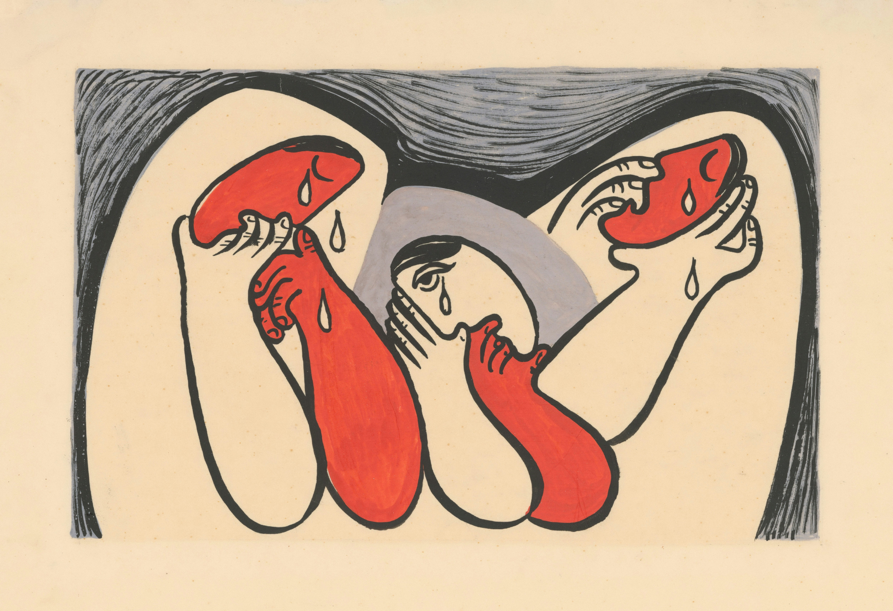

Home
Mood Log
Blog
Decision Builder
MindRacer's Blog
Here, you can find articles that could be useful for your self betterment journey, and log how these articles might make you feel!
Understanding Executive Dysfunction
Click here to read more ~ Executive Dysfunction? Sign and Symptoms of EFD from Attitude Magazine!

Executive functions help us plan, focus, and manage tasks. Learn about the seven types of self-regulation and how executive dysfunction relates to ADHD.
Navigating Your Way Out of Decision Paralysis
Click here to read more ~ Navigating Your Way Out of Decision Paralysis from Psychology Today!

Explore the roots of decision paralysis—from fear of mistakes to perfectionism—and discover how shifting your perspective can help you make choices with confidence.
How to Use a Mood Tracker
Click here to read more ~ How to Use a Mood Tracker from Very Well Mind!
Research shows that tracking your emotions can improve mental health and self-awareness. Here, you can find tips and tricks to get start.